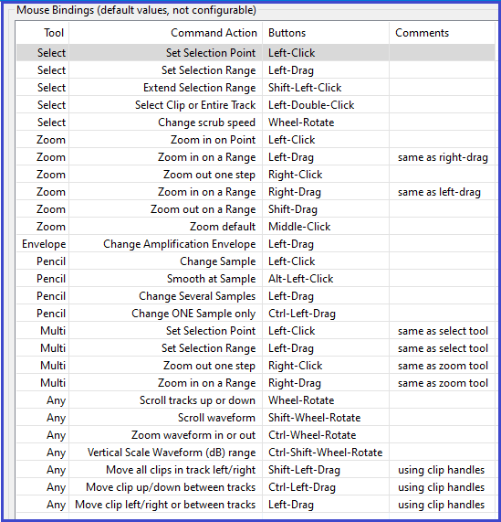

Mouse Bindings
Mac users:
|
- 
- Holding Shift then clicking on the Play button on Transport Toolbar plays the looping region once when loop play is enabled. When there is a selection region, holding Ctrl (⌘ on Mac) then clicking the Play button will play by default two seconds before the region and one second after it in order to preview what deleting the region would sound like. The durations played before and after the region can be changed in the Cut Preview section of Playback Preferences.
- Similarly, holding Shift then clicking on the Play-at-Speed button on Play-at-Speed Toolbar plays the looping region at your chosen adjusted speed once and holding Ctrl (⌘ on Mac) then clicking the Play-at-Speed button cut previews at adjusted speed.
- Holding Shift then clicking on the Record button on Transport Toolbar records on a new track rather than recording on the same track.
- Holding Ctrl (⌘ on a Mac) when the Multi-Tool is being used temporarily converts the tool to the Timeshift-Tool, so can be used to drag clips from one place to another.
- Holding Ctrl or Shift while clicking in a different part of a track's waveform creates a selection from the editing cursor to the click point, or expands or contracts an existing selection to the click point.
- Holding Ctrl while clicking in the waveform of a different track creates a selection from the editing cursor to the click point in both tracks. An existing selection expands or contracts to the click point in both tracks.
- Holding Shift while clicking in the waveform of a different track creates a selection from the editing cursor to the click point in both tracks and in any tracks between. An existing selection expands or contracts to the click point in both tracks and in any tracks between.
- To preserve the current selection while removing it from or adding it to other tracks, Ctrl-click or Shift-click on the Track Control Panel of those tracks. See Audacity Selection for details.
- Holding Shift then dragging by using the Clip-handle drag-bars shifts all clips in a track to left or right.
- Holding Ctrl (⌘ on Mac} then dragging using the Clip-handle drag-bars lets you drag clips vertically into another track without accidentally dragging them left or right.
Most of the bindings are for click and drag gestures when using one of the Audacity tools. "Left", "Right" and "Middle" in the list refer to the mouse button to be clicked.
If your mouse has a standard scroll wheel or ball you can also use the "Any" gestures listed above for vertical or horizontal scrolling of tracks on the Audacity screen, or for horizontal zooming in or out on the mouse pointer. Horizontal scrolling and zooming using the mouse wheel or ball requires the Shift or Ctrl key respectively to be held down.
On Mac Trackpads you can use two fingers to scroll horizontally, or pinch/expand to zoom the waveform in or out at the pointer position, without using a modifier key. Horizontal scrolling and pinch/expand should also work on most touchpads on Windows machines, but you may need to apply this horizontal scrolling modification or to install special drivers for your touchpad.